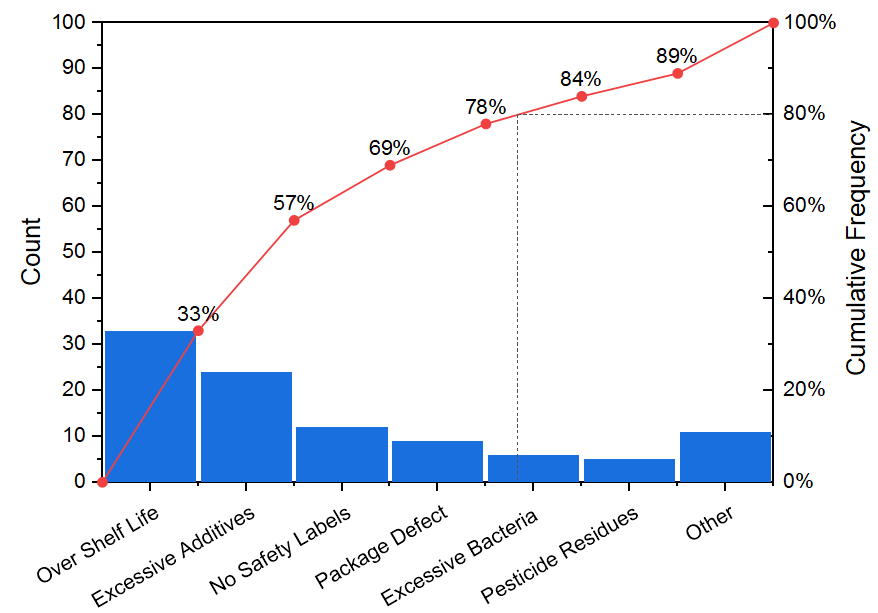
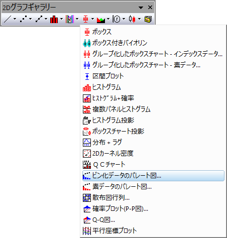

パレート図-ビン化データ
ParetoChart-BinData

要求されるデータ
1つの列(またはデータ範囲)を選択し、別の列(またはデータ範囲)をカウントとして選択します。
グラフ作成
データを選択します。
メニューからを選択します。
または
2Dグラフツールバーのビン化データのパレート図ボタンをクリックします。

テンプレート
PARETOBIN.otp（Originのプログラムフォルダにインストールされています）
ノート
- 入力データをグループ別に分割し、パレートグラフとして異なるパネルまたはグラフにプロットするために、グループ列を選択できます。
- 棒の右側にシンボルを表示チェックボックスを使用して、シンボルを棒の右側に表示するか指定できます。 チェックを付けると、折れ線+シンボルは原点(0,0)から開始し、散布点が棒の右側に配置されます。また、最初の点と最後の点にはラベルは表示されません。
- 右のY軸スケールは常に0〜100です。そしてY=80の位置に水平と垂直のドロップラインが非表示されます。
作成とカスタマイズについての詳細は パレート図 ページを参照してください。